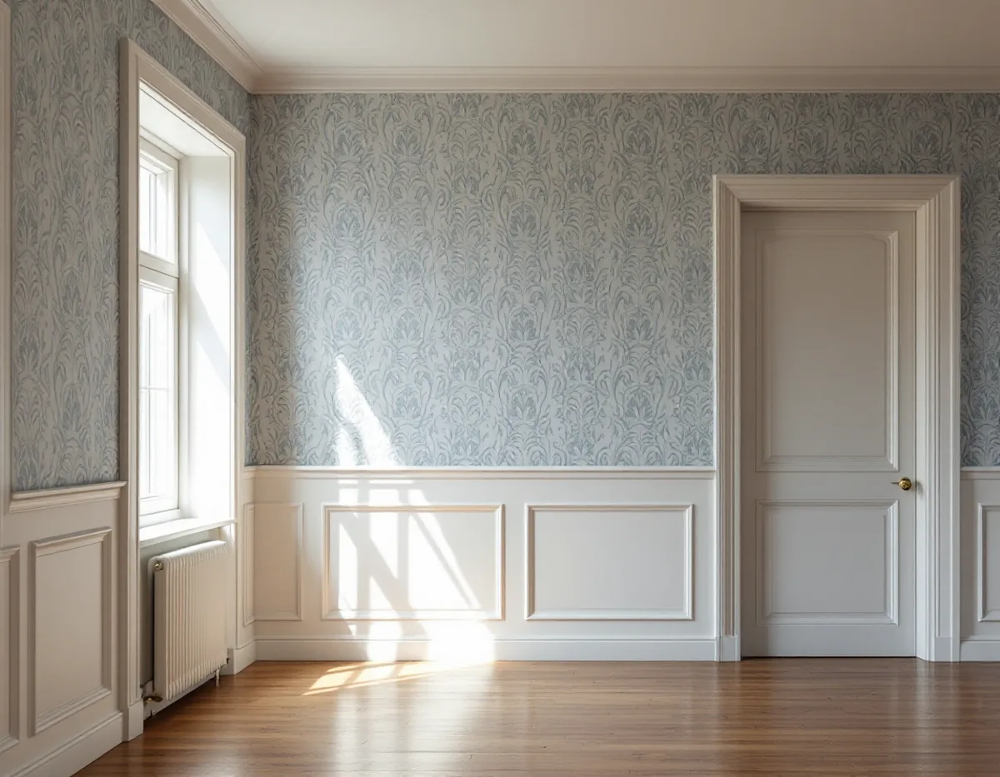
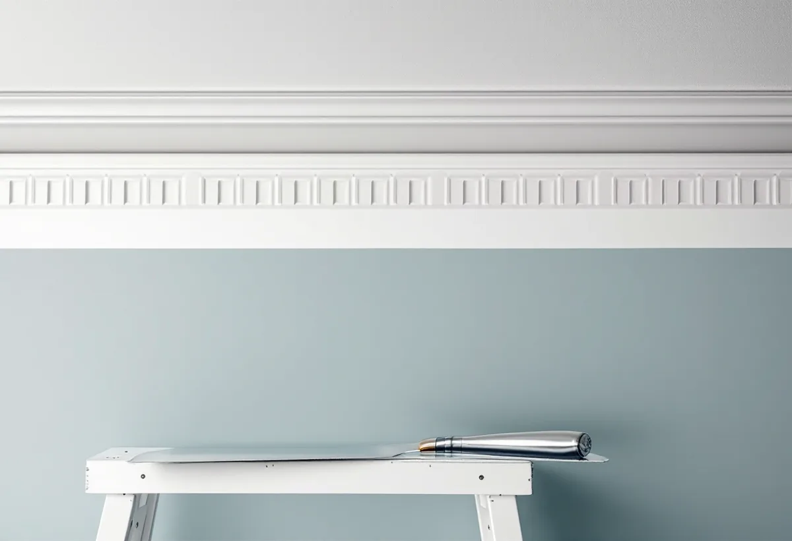

Platsbesök
Vi tittar på lister, foder och bröstpanel och mäter hur rummet lutar.
Tapeten är bara en del av väggen. Runt den sitter golvsocklar, dörr- och fönsterfoder, taklister och ibland en bröstpanel, och det är där en tapetsering syns först. Geal Entreprenad AB tapetserar i villor, radhus och bostadsrätter i Täby och räknar snickerierna som en del av arbetet.

Täby kommuns skrift Kulturmiljöer i Täby beskriver hur villabyggandet tog fart när tomter styckades vid stationerna. Mellan 1907 och 1920 uppfördes omkring 80 villor i Roslags-Näsby av Näsby Fastighets AB. När Viggbyholm fick en järnvägsstation 1903 började även Viggbyholms gård stycka av tomter, och när hållplatsen blev station 1910 fanns ett trettiotal villor i Viggbyholms Norra Villastad. Vid Täby kyrkby omfattade en styckningsplan från 1907 sammanlagt 1 000 tomter, och i Täby Villastad byggdes omkring 250 villor fram till första världskriget.
Skriften visar också att merparten av kommunens daterade byggnader har tillkommit efter 1970, och att bebyggelsen från före 1920 bara utgör några få procent. Byggnader från tiden före 1920-talets bebyggelseexpansion som har sin huvudsakliga karaktär kvar är så få att de flesta kan antas uppfylla något av kriterierna för en särskilt värdefull byggnad.

I Byggnadsvårdsföreningens artikel Detaljerna gör rummet förklarar en byggnadsantikvarie att lister finns för att dölja springorna kring dörr- och fönsterkarmar och där väggen möter golv och tak. Det oförmedlade mötet mellan två plana ytor har länge setts som oskönt. Profilerna byggs upp av en handfull enkla grundformer, där de viktigaste är fasen, hålkälet, staven och karnisen, och de klassiska profilerna användes ända in på 1920-talet. Stilbrotten uppstår i stället ofta när funkisens släta foder förs in i äldre miljöer.
Ett exempel i artikeln är en matsal i jugendstil från 1905, med bröstpanel under fönstren och sockelpanel på övriga väggar. I ett annat svar skriver föreningen att träinramningar för tapeter och målade väggfält har funnits i Sverige sedan renässansen. Höjden på väggsnickerierna kan gå från enkla golvsocklar via sockelpaneler och fönsterbänkshöga paneler till boaseringar från manshöjd upp till hela vägghöjden.
Föreningens artikel om underlag för tapetsering beskriver underarbetet: löst sittande tapet skrapas upp även vid foderlister, socklar och vinklar. Duger de gamla tapeterna inte som underlag tas all tapet och makulatur bort, och då skrapas och slipas även foder, taklister och sockellister. Mot taket kan tapeten skäras med tapetkniv så att den slutar 2–3 mm från taket, en så kallad snobbrand.
Vi skyddar snickerierna under nedtagningen och lossar en list bara när det behövs och du har sagt ja. Ska listerna målas om samtidigt kan det planeras in i samma arbete.
Samma artikel har ett råd för äldre tapeter med stort mönster: slå en våglinje cirka 25 centimeter från taket och justera mönsterhöjden efter den, så att man slipper till exempel halva pioner mot taket om huset lutar. Våderna rivs till rätt längd plus ungefär tio centimeter, och tapeter som kräver mönsterpassning skjuts först upp till mönsterhöjd.
I en äldre villa i Roslags-Näsby eller Viggbyholm kan golv och tak ha satt sig. Då mäter vi rummet och bestämmer var mönstret ska börja innan första våden sätts upp. Gäller arbetet fasaden finns mer under målare i Täby.
Vi tittar på lister, foder och bröstpanel och mäter hur rummet lutar.
Vi bestämmer var tapeten ska sluta mot varje snickeri.
Nedtagning, underarbete och uppsättning redovisas för sig.
Lösa kanter vid foder och socklar skrapas upp och slipas.
Mönstret passas mot en våglinje under taket.
Vi går igenom kanterna med dig och lämnar överbliven tapet.
Skatteverket räknar tapetsering som rotarbete: i villa och radhus när arbetet görs i bostaden du äger, och i bostadsrätt innanför lägenhetens tak, väggar och golv och inom det du ansvarar för enligt stadgarna.
Geal drar avdraget direkt på fakturan med högst 30 procent av arbetskostnaden. Taket är 50 000 kr i rotavdrag per person och år, inom 75 000 kr för rot och rut tillsammans. Tapet och annat material räknas inte.
Hur många snickerier som ska skyddas eller lagas, hur mycket gammal tapet som ska ner och om mönstret kräver passning påverkar mest. Efter ett gratis platsbesök får du ett skriftligt kostnadsförslag.
Fasad, fönster och invändig målning.
Målare i Stockholm →Takbyte, takbesiktning och plåtarbeten.
Takläggare i Täby →Näsbypark, Viggbyholm och Gribbylund.
Takrenovering i Täby →Detaljplan, Q-märkning och VA-inkoppling.
Attefallshus i Täby →Kulör per kvarter och provytor.
Fasadmålning i Täby →Villastäder och grupphus i Täby.
Fönsterbyte i Täby →Gårdarnas fönster, kulör och spröjs.
Fönsterrenovering i Täby →Laga och slipa golvet efter en riven vägg.
Golvslipning i Täby →Stationsvillor, funkis och grupphus i Täby.
Plåtslagare i Täby →Betongpannor, kedjehus och tegelvillor.
Takbyte i Täby →Radhuslängor, villor och nya gästhus.
Badrumsrenovering i Täby →Tillbyggnad, gästhus och renovering.
Byggföretag i Täby →Tegelvillor, kedjehus och grupphus i Täby.
Fasadrenovering i Täby →Villor, radhus och kedjehus från 1970- och 80-talen.
Golvläggare i Täby →Grupphus, radhus och villor vid banan.
Köksrenovering i Täby →Trävillor, puts och kedjehus i Täby.
Målare i Täby →Verandor, fönster och carport.
Snickare i Täby →Byle, kyrkbyn och detaljplanen.
Tillbyggnad i Täby →Ett hus som går att bo kvar i.
Totalrenovering i Täby →